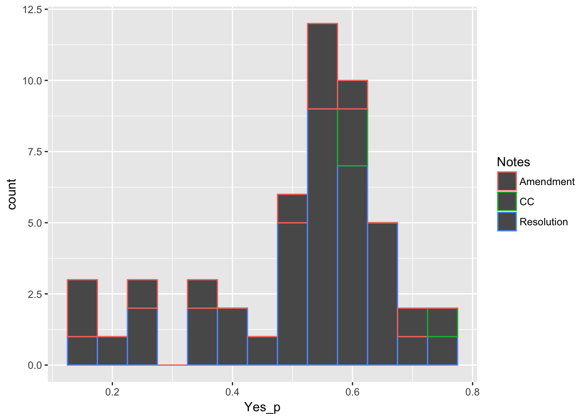

It’s been a while since I posted, but this weekend I returned to the American Academy of Pediatrics Annual Leadership Forum and I was able to cite my analysis on the top 10 resolutions.
In the spirit of looking further at the ALF data I decided to look at the voting records from this year. It seemed that most votes pass by at least 80% if not more. This includes the amendment votes.
Methods
For each resolution or amendment, I recorded the number voting and the percentage voting in favor. Here’s the exploratory analysis.
suppressPackageStartupMessages(library(dplyr))
library(ggplot2)
dat <- read.csv("../datasets/ALF_votes.csv")
dat <- tbl_df(dat)
dat## # A tibble: 105 x 9
## Resolution Yes No Total Notes Amended Amended_during_de… Success
## <fct> <int> <int> <int> <fct> <int> <int> <int>
## 1 CCB 100 0 164 CC 0 0 1
## 2 30 58 42 169 Resolu… 1 0 1
## 3 31 63 37 173 Resolu… 0 0 1
## 4 32 98 2 173 Resolu… 1 0 1
## 5 33 57 43 NA Amendm… NA NA 1
## 6 33 73 27 163 Resolu… 1 1 1
## 7 34 75 25 150 Amendm… NA NA 1
## 8 34 91 9 155 Resolu… 1 1 1
## 9 35 18 82 142 Resolu… 0 0 0
## 10 37 86 14 154 Amendm… NA NA 1
## # ... with 95 more rows, and 1 more variable: Consent <int>dat %>% mutate(Yes_p = Yes/Total) %>%
ggplot(aes(x = Yes_p, color = Notes)) + geom_histogram(binwidth = 0.05)## Warning: Removed 55 rows containing non-finite values (stat_bin).
It looks like most
One hypothesis is that resolutions that have to be amended are less likely to pass than resolutions that do not require amendment.
There were 70 votes taken on 78 resolutions and 4 late resolutions. The number of votes is less than the number of resolutions because 35 were placed on the consent calendar.
Of all the resolutions, 0.4268293 were on the consent calendar.
Overall success rate for amendments
dat %>% filter(Notes == "Amendment") %>%
summarize(Amendment_success_rate = mean(Success, na.rm = T))## # A tibble: 1 x 1
## Amendment_success_rate
## <dbl>
## 1 0.765dat %>% filter(Notes == "Resolution") %>%
summarize(Resolution_success_rate = mean(Success, na.rm = T))## # A tibble: 1 x 1
## Resolution_success_rate
## <dbl>
## 1 0.927Success rate if not on consent calendar
dat %>% filter(Notes == "Resolution" & Consent == 0) %>%
summarize(Resolution_success_rate = mean(Success, na.rm = T))## # A tibble: 1 x 1
## Resolution_success_rate
## <dbl>
## 1 0.872Distribution of votes overall
dat %>% filter(Consent == 0) %>%
group_by(Notes) %>%
summarize(Count = n())## # A tibble: 6 x 2
## Notes Count
## <fct> <int>
## 1 Amendment 17
## 2 CC 3
## 3 Close 1
## 4 Resolution 47
## 5 Tabled 1
## 6 Withdrawn 1Distribution of votes for amendments
dat %>% filter(Notes != "CC")## # A tibble: 102 x 9
## Resolution Yes No Total Notes Amended Amended_during_de… Success
## <fct> <int> <int> <int> <fct> <int> <int> <int>
## 1 30 58 42 169 Resolu… 1 0 1
## 2 31 63 37 173 Resolu… 0 0 1
## 3 32 98 2 173 Resolu… 1 0 1
## 4 33 57 43 NA Amendm… NA NA 1
## 5 33 73 27 163 Resolu… 1 1 1
## 6 34 75 25 150 Amendm… NA NA 1
## 7 34 91 9 155 Resolu… 1 1 1
## 8 35 18 82 142 Resolu… 0 0 0
## 9 37 86 14 154 Amendm… NA NA 1
## 10 37 96 4 160 Resolu… 1 1 1
## # ... with 92 more rows, and 1 more variable: Consent <int>Distribution of votes for resolutions